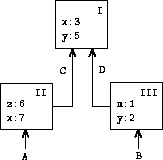
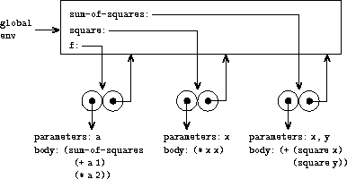

3.2 The Environment Model of Evaluation
When we introduced compound procedures in chapter 1, we used the substitution model of evaluation (section 1.1.5) to define what is meant by applying a procedure to arguments:
- To apply a compound procedure to arguments, evaluate the body of the procedure with each formal parameter replaced by the corresponding argument.
Once we admit assignment into our programming language, such a definition is no longer adequate. In particular, section 3.1.3 argued that, in the presence of assignment, a variable can no longer be considered to be merely a name for a value. Rather, a variable must somehow designate a ``place'' in which values can be stored. In our new model of evaluation, these places will be maintained in structures called environments.
An environment is a sequence of frames. Each frame is a table (possibly empty) of bindings, which associate variable names with their corresponding values. (A single frame may contain at most one binding for any variable.) Each frame also has a pointer to its enclosing environment, unless, for the purposes of discussion, the frame is considered to be global. The value of a variable with respect to an environment is the value given by the binding of the variable in the first frame in the environment that contains a binding for that variable. If no frame in the sequence specifies a binding for the variable, then the variable is said to be unbound in the environment.
{border="0"}
Figure 3.1: A simple environment structure.
Figure 3.1 shows a simple environment
structure consisting of three frames, labeled I, II, and III. In the
diagram, A, B, C, and D are pointers to environments. C and D point to
the same environment. The variables z and x are bound in frame II,
while y and x are bound in frame I. The value of x in environment
D is 3. The value of x with respect to environment B is also 3. This
is determined as follows: We examine the first frame in the sequence
(frame III) and do not find a binding for x, so we proceed to the
enclosing environment D and find the binding in frame I. On the other
hand, the value of x in environment A is 7, because the first frame in
the sequence (frame II) contains a binding of x to 7. With respect to
environment A, the binding of x to 7 in frame II is said to
shadow the binding of x to 3 in frame I.
The environment is crucial to the evaluation process, because it
determines the context in which an expression should be evaluated.
Indeed, one could say that expressions in a programming language do not,
in themselves, have any meaning. Rather, an expression acquires a
meaning only with respect to some environment in which it is evaluated.
Even the interpretation of an expression as straightforward as (+ 1 1)
depends on an understanding that one is operating in a context in which
+ is the symbol for addition. Thus, in our model of evaluation we will
always speak of evaluating an expression with respect to some
environment. To describe interactions with the interpreter, we will
suppose that there is a global environment, consisting of
a single frame (with no enclosing environment) that includes values for
the symbols associated with the primitive procedures. For example, the
idea that + is the symbol for addition is captured by saying that the
symbol + is bound in the global environment to the primitive addition
procedure.
3.2.1 The Rules for Evaluation
The overall specification of how the interpreter evaluates a combination remains the same as when we first introduced it in section 1.1.3:
- To evaluate a combination:
Evaluate the subexpressions of the combination.^[12]{.small}^{#call_footnote_Temp_342}
Apply the value of the operator subexpression to the values of the operand subexpressions.
The environment model of evaluation replaces the substitution model in specifying what it means to apply a compound procedure to arguments.
In the environment model of evaluation, a procedure is always a pair
consisting of some code and a pointer to an environment. Procedures are
created in one way only: by evaluating a lambda expression.
This produces a procedure whose code is obtained from the
text of the lambda expression and whose environment is the environment
in which the lambda expression was evaluated to produce the procedure.
For example, consider the procedure definition
(define (square x)
(* x x))
evaluated in the global environment. The procedure definition syntax is
just syntactic sugar for an underlying implicit lambda expression. It
would have been equivalent to have used
(define square
(lambda (x) (* x x)))
which evaluates (lambda (x) (* x x)) and binds square to the
resulting value, all in the global environment.
Figure 3.2 shows the result of evaluating
this define expression. The procedure object is a pair whose code
specifies that the procedure has one formal parameter, namely x, and a
procedure body (* x x). The environment part of the procedure is a
pointer to the global environment, since that is the environment in
which the lambda expression was evaluated to produce the procedure. A
new binding, which associates the procedure object with the symbol
square, has been added to the global frame. In general, define
creates definitions by adding bindings to frames.
 {border="0"}
{border="0"}
Figure 3.2: Environment structure produced by evaluating
(define (square x) (* x x)) in the global environment.
Now that we have seen how procedures are created, we can describe how procedures are applied. The environment model specifies: To apply a procedure to arguments, create a new environment containing a frame that binds the parameters to the values of the arguments. The enclosing environment of this frame is the environment specified by the procedure. Now, within this new environment, evaluate the procedure body.
To show how this rule is followed,
figure 3.3 illustrates the environment
structure created by evaluating the expression (square 5) in the
global environment, where square is the procedure generated in
figure 3.2. Applying the procedure results
in the creation of a new environment, labeled E1 in the figure, that
begins with a frame in which x, the formal parameter for the
procedure, is bound to the argument 5. The pointer leading upward from
this frame shows that the frame's enclosing environment is the global
environment. The global environment is chosen here, because this is the
environment that is indicated as part of the square procedure object.
Within E1, we evaluate the body of the procedure, (* x x). Since the
value of x in E1 is 5, the result is (* 5 5), or 25.
 {border="0"}
{border="0"}
Figure 3.3: Environment created by evaluating (square 5) in the
global environment.
The environment model of procedure application can be summarized by two rules:
-
A procedure object is applied to a set of arguments by constructing a frame, binding the formal parameters of the procedure to the arguments of the call, and then evaluating the body of the procedure in the context of the new environment constructed. The new frame has as its enclosing environment the environment part of the procedure object being applied.
-
A procedure is created by evaluating a
lambdaexpression relative to a given environment. The resulting procedure object is a pair consisting of the text of thelambdaexpression and a pointer to the environment in which the procedure was created.
We also specify that defining a symbol using define
creates a binding in the current environment frame and assigns to the
symbol the indicated
value.^[13]{.small}^{#call_footnote_Temp_343}
Finally, we specify the behavior of set!, the operation that forced us
to introduce the environment model in the first place. Evaluating the
expression (set! <variable> <value>) in some environment
locates the binding of the variable in the environment and changes that
binding to indicate the new value. That is, one finds the first frame in
the environment that contains a binding for the variable and modifies
that frame. If the variable is unbound in the environment, then set!
signals an error.
These evaluation rules, though considerably more complex than the substitution model, are still reasonably straightforward. Moreover, the evaluation model, though abstract, provides a correct description of how the interpreter evaluates expressions. In chapter 4 we shall see how this model can serve as a blueprint for implementing a working interpreter. The following sections elaborate the details of the model by analyzing some illustrative programs.
3.2.2 Applying Simple Procedures
When we introduced the
substitution model in section 1.1.5 we
showed how the combination (f 5) evaluates to 136, given the following
procedure definitions:
(define (square x)
(* x x))
(define (sum-of-squares x y)
(+ (square x) (square y)))
(define (f a)
(sum-of-squares (+ a 1) (* a 2)))
We can analyze the same example using the environment model.
Figure 3.4 shows the three procedure
objects created by evaluating the definitions of f, square, and
sum-of-squares in the global environment. Each procedure object
consists of some code, together with a pointer to the global
environment.
{border="0"}
Figure 3.4: Procedure objects in the global frame.
In figure 3.5 we see the environment
structure created by evaluating the expression (f 5). The call to f
creates a new environment E1 beginning with a frame in which a, the
formal parameter of f, is bound to the argument 5. In E1, we evaluate
the body of f:
(sum-of-squares (+ a 1) (* a 2))
 {border="0"}
{border="0"}
Figure 3.5: Environments created by evaluating (f 5) using the
procedures in figure 3.4.
To evaluate this combination, we first evaluate the subexpressions. The
first subexpression, sum-of-squares, has a value that is a procedure
object. (Notice how this value is found: We first look in the first
frame of E1, which contains no binding for sum-of-squares. Then we
proceed to the enclosing environment, i.e. the global environment, and
find the binding shown in figure 3.4.) The
other two subexpressions are evaluated by applying the primitive
operations + and * to evaluate the two combinations (+ a 1) and
(* a 2) to obtain 6 and 10, respectively.
Now we apply the procedure object sum-of-squares to the arguments 6
and 10. This results in a new environment E2 in which the formal
parameters x and y are bound to the arguments. Within E2 we evaluate
the combination (+ (square x) (square y)). This leads us to evaluate
(square x), where square is found in the global frame and x is 6.
Once again, we set up a new environment, E3, in which x is bound to 6,
and within this we evaluate the body of square, which is (* x x).
Also as part of applying sum-of-squares, we must evaluate the
subexpression (square y), where y is 10. This second call to
square creates another environment, E4, in which x, the formal
parameter of square, is bound to 10. And within E4 we must evaluate
(* x x).
The important point to observe is that each call to square creates a
new environment containing a binding for x. We can see here how the
different frames serve to keep separate the different local variables
all named x. Notice that each frame created by square points to the
global environment, since this is the environment indicated by the
square procedure object.
After the subexpressions are evaluated, the results are returned. The
values generated by the two calls to square are added by
sum-of-squares, and this result is returned by f. Since our focus
here is on the environment structures, we will not dwell on how these
returned values are passed from call to call; however, this is also an
important aspect of the evaluation process, and we will return to it in
detail in chapter 5.
Exercise 3.9. In section 1.2.1 we used the substitution model to analyze two procedures for computing factorials, a recursive version
(define (factorial n)
(if (= n 1)
1
(* n (factorial (- n 1)))))
and an iterative version
(define (factorial n)
(fact-iter 1 1 n))
(define (fact-iter product counter max-count)
(if (> counter max-count)
product
(fact-iter (* counter product)
(+ counter 1)
max-count)))
Show the environment structures created by evaluating (factorial 6)
using each version of the factorial
procedure.^[14]{.small}^{#call_footnote_Temp_345}
3.2.3 Frames as the Repository of Local State
We can turn to the environment model to see how procedures and assignment can be used to represent objects with local state. As an example, consider the ``withdrawal processor'' from section 3.1.1 created by calling the procedure
(define (make-withdraw balance)
(lambda (amount)
(if (>= balance amount)
(begin (set! balance (- balance amount))
balance)
"Insufficient funds")))
Let us describe the evaluation of
(define W1 (make-withdraw 100))
followed by
(W1 50)
50
Figure 3.6 shows the result of defining
the make-withdraw procedure in the global environment. This produces a
procedure object that contains a pointer to the global environment. So
far, this is no different from the examples we have already seen, except
that the body of the procedure is itself a lambda expression.
 {border="0"}
{border="0"}
Figure 3.6: Result of defining make-withdraw in the global
environment.
The interesting part of the computation happens when we apply the
procedure make-withdraw to an argument:
(define W1 (make-withdraw 100))
We begin, as usual, by setting up an environment E1 in which the formal
parameter balance is bound to the argument 100. Within this
environment, we evaluate the body of make-withdraw, namely the
lambda expression. This constructs a new procedure object, whose code
is as specified by the lambda and whose environment is E1, the
environment in which the lambda was evaluated to produce the
procedure. The resulting procedure object is the value returned by the
call to make-withdraw. This is bound to W1 in the global
environment, since the define itself is being evaluated in the global
environment. Figure 3.7 shows the
resulting environment structure.
 {border="0"}
{border="0"}
Figure 3.7: Result of evaluating (define W1 (make-withdraw 100)).
Now we can analyze what happens when W1 is applied to an argument:
(W1 50)
50
We begin by constructing a frame in which amount, the formal parameter
of W1, is bound to the argument 50. The crucial point to observe is
that this frame has as its enclosing environment not the global
environment, but rather the environment E1, because this is the
environment that is specified by the W1 procedure object. Within this
new environment, we evaluate the body of the procedure:
(if (>= balance amount)
(begin (set! balance (- balance amount))
balance)
"Insufficient funds")
The resulting environment structure is shown in
figure 3.8. The expression being evaluated
references both amount and balance. Amount will be found in the
first frame in the environment, while balance will be found by
following the enclosing-environment pointer to E1.
 {border="0"}
{border="0"}
Figure 3.8: Environments created by applying the procedure object
W1.
When the set! is executed, the binding of balance in E1 is changed.
At the completion of the call to W1, balance is 50, and the frame
that contains balance is still pointed to by the procedure object
W1. The frame that binds amount (in which we executed the code that
changed balance) is no longer relevant, since the procedure call that
constructed it has terminated, and there are no pointers to that frame
from other parts of the environment. The next time W1 is called, this
will build a new frame that binds amount and whose enclosing
environment is E1. We see that E1 serves as the ``place'' that holds
the local state variable for the procedure object W1.
Figure 3.9 shows the situation after the
call to W1.
 {border="0"}
{border="0"}
Figure 3.9: Environments after the call to W1.
Observe what happens when we create a second ``withdraw'' object by
making another call to make-withdraw:
(define W2 (make-withdraw 100))
This produces the environment structure of
figure 3.10, which shows that W2 is a
procedure object, that is, a pair with some code and an environment. The
environment E2 for W2 was created by the call to make-withdraw. It
contains a frame with its own local binding for balance. On the other
hand, W1 and W2 have the same code: the code specified by the
lambda expression in the body of
make-withdraw.^[15]{.small}^{#call_footnote_Temp_346}
We see here why W1 and W2 behave as independent objects. Calls to
W1 reference the state variable balance stored in E1, whereas calls
to W2 reference the balance stored in E2. Thus, changes to the local
state of one object do not affect the other object.
 {border="0"}
{border="0"}
Figure 3.10: Using (define W2 (make-withdraw 100)) to create a
second object.
Exercise 3.10. In the make-withdraw procedure,
the local variable balance is created as a parameter of
make-withdraw. We could also create the local state variable
explicitly, using let, as follows:
(define (make-withdraw initial-amount)
(let ((balance initial-amount))
(lambda (amount)
(if (>= balance amount)
(begin (set! balance (- balance amount))
balance)
"Insufficient funds"))))
Recall from
section 1.3.2 that let is simply
syntactic sugar for a procedure call:
(let ((<var> <exp>)) <body>)
is interpreted as an alternate syntax for
((lambda (<var>) <body>) <exp>)
Use the environment model to analyze this alternate version of
make-withdraw, drawing figures like the ones above to illustrate the
interactions
(define W1 (make-withdraw 100))
(W1 50)
(define W2 (make-withdraw 100))
Show that the two versions of make-withdraw create objects with the
same behavior. How do the environment structures differ for the two
versions?
3.2.4 Internal Definitions
Section 1.1.8 introduced the idea that procedures can have internal definitions, thus leading to a block structure as in the following procedure to compute square roots:
(define (sqrt x)
(define (good-enough? guess)
(< (abs (- (square guess) x)) 0.001))
(define (improve guess)
(average guess (/ x guess)))
(define (sqrt-iter guess)
(if (good-enough? guess)
guess
(sqrt-iter (improve guess))))
(sqrt-iter 1.0))
Now we can use the environment model to see why these internal
definitions behave as desired.
Figure 3.11 shows the point in the
evaluation of the expression (sqrt 2) where the internal procedure
good-enough? has been called for the first time with guess equal to
1.
 {border="0"}
{border="0"}
Figure 3.11: Sqrt procedure with internal definitions.
Observe the structure of the environment. Sqrt is a symbol in the
global environment that is bound to a procedure object whose associated
environment is the global environment. When sqrt was called, a new
environment E1 was formed, subordinate to the global environment, in
which the parameter x is bound to 2. The body of sqrt was then
evaluated in E1. Since the first expression in the body of sqrt is
(define (good-enough? guess)
(< (abs (- (square guess) x)) 0.001))
evaluating this expression defined the procedure good-enough? in the
environment E1. To be more precise, the symbol good-enough? was added
to the first frame of E1, bound to a procedure object whose associated
environment is E1. Similarly, improve and sqrt-iter were defined as
procedures in E1. For conciseness,
figure 3.11 shows only the procedure
object for good-enough?.
After the local procedures were defined, the expression
(sqrt-iter 1.0) was evaluated, still in environment E1. So the
procedure object bound to sqrt-iter in E1 was called with 1 as an
argument. This created an environment E2 in which guess, the parameter
of sqrt-iter, is bound to 1. Sqrt-iter in turn called good-enough?
with the value of guess (from E2) as the argument for good-enough?.
This set up another environment, E3, in which guess (the parameter of
good-enough?) is bound to 1. Although sqrt-iter and good-enough?
both have a parameter named guess, these are two distinct local
variables located in different frames. Also, E2 and E3 both have E1 as
their enclosing environment, because the sqrt-iter and good-enough?
procedures both have E1 as their environment part. One consequence of
this is that the symbol x that appears in the body of good-enough?
will reference the binding of x that appears in E1, namely the value
of x with which the original sqrt procedure was called. The
environment model thus explains the two key properties that make local
procedure definitions a useful technique for modularizing programs:
- The names of the local procedures do not interfere with names external to the enclosing procedure, because the local procedure names will be bound in the frame that the procedure creates when it is run, rather than being bound in the global environment.
- The local procedures can access the arguments of the enclosing procedure, simply by using parameter names as free variables. This is because the body of the local procedure is evaluated in an environment that is subordinate to the evaluation environment for the enclosing procedure.
Exercise 3.11. In section 3.2.3 we saw how the environment model described the behavior of procedures with local state. Now we have seen how internal definitions work. A typical message-passing procedure contains both of these aspects. Consider the bank account procedure of section 3.1.1:
(define (make-account balance)
(define (withdraw amount)
(if (>= balance amount)
(begin (set! balance (- balance amount))
balance)
"Insufficient funds")))
(define (deposit amount)
(set! balance (+ balance amount))
balance)
(define (dispatch m)
(cond ((eq? m 'withdraw) withdraw)
((eq? m 'deposit) deposit)
(else (error "Unknown request -- MAKE-ACCOUNT"
m))))
dispatch)
Show the environment structure generated by the sequence of interactions
(define acc (make-account 50))
((acc 'deposit) 40)
90
((acc 'withdraw) 60)
30
Where is the local state for acc kept? Suppose we define another
account
(define acc2 (make-account 100))
How are the local states for the two accounts kept distinct? Which parts
of the environment structure are shared between acc and acc2?
^[12]{.small}^](book-Z-H-21.html#call_footnote_Temp_342){#footnote_Temp_342} Assignment introduces a subtlety into step 1 of the evaluation rule. As shown in exercise 3.8, the presence of assignment allows us to write expressions that will produce different values depending on the order in which the subexpressions in a combination are evaluated. Thus, to be precise, we should specify an evaluation order in step 1 (e.g., left to right or right to left). However, this order should always be considered to be an implementation detail, and one should never write programs that depend on some particular order. For instance, a sophisticated compiler might optimize a program by varying the order in which subexpressions are evaluated.
^[13]{.small}^](book-Z-H-21.html#call_footnote_Temp_343){#footnote_Temp_343}
If there is already a binding for the variable in the current frame,
then the binding is changed. This is convenient because it allows
redefinition of symbols; however, it also means that define can be
used to change values, and this brings up the issues of assignment
without explicitly using set!. Because of this, some
people prefer redefinitions of existing symbols to signal errors or
warnings.
^[14]{.small}^](book-Z-H-21.html#call_footnote_Temp_345){#footnote_Temp_345}
The environment model will not clarify our claim in
section 1.2.1 that the interpreter can
execute a procedure such as fact-iter in a constant amount of space
using tail recursion. We will discuss tail recursion when we
deal with the control structure of the
interpreter in section 5.4.
^[15]{.small}^](book-Z-H-21.html#call_footnote_Temp_346){#footnote_Temp_346}
Whether W1 and W2 share the same physical code stored in the
computer, or whether they each keep a copy of the code, is a detail of
the implementation. For the interpreter we implement in chapter 4, the
code is in fact shared.